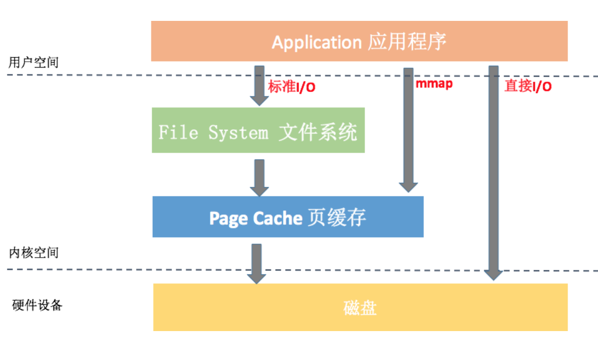
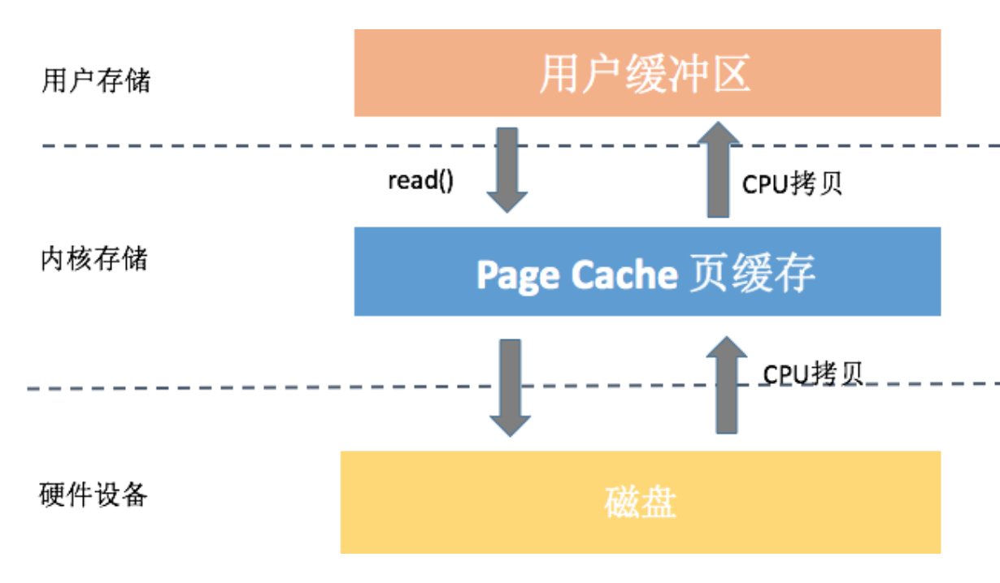
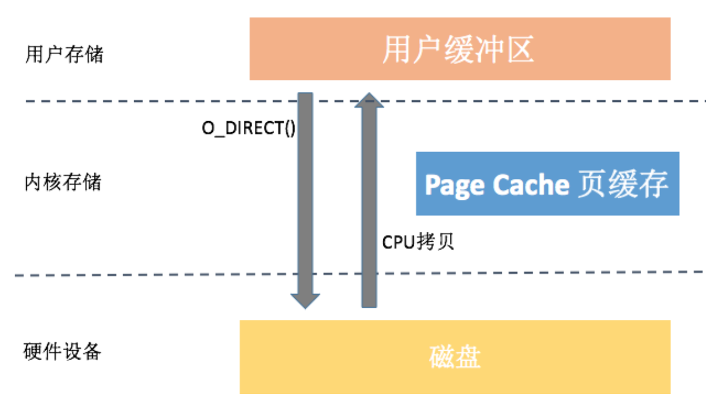
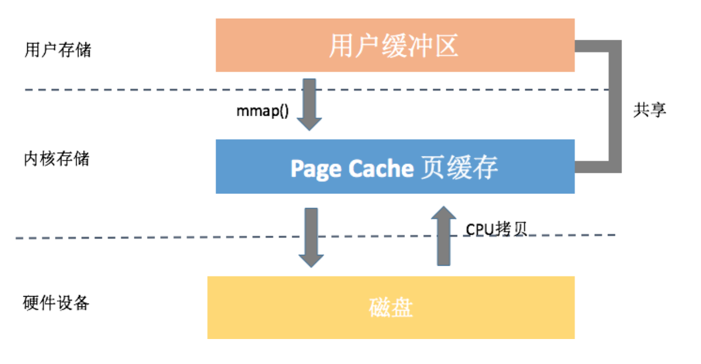
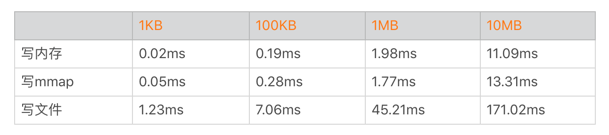
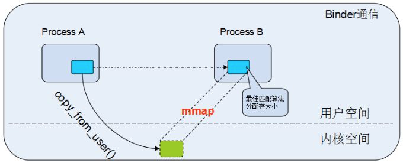
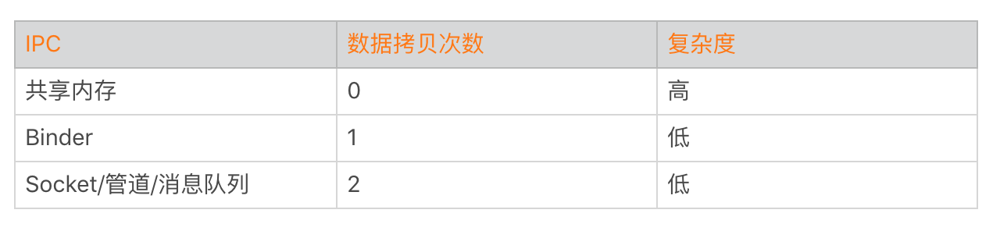
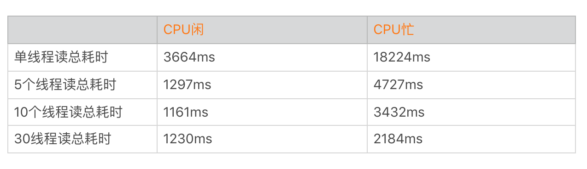
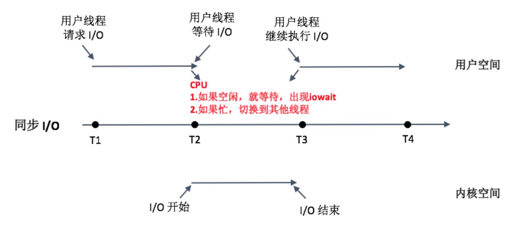
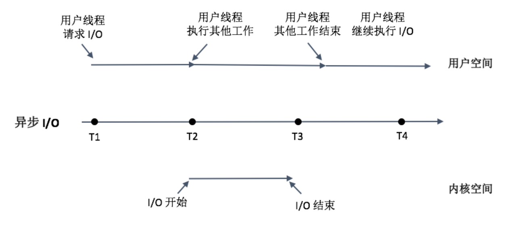

- 00 导读 如何打造高质量的应用？.md
- 00 开篇词 焦虑的移动开发者该如何破局？.md
- 01 崩溃优化（上）：关于“崩溃”那些事儿.md
- 02 崩溃优化（下）：应用崩溃了，你应该如何去分析？.md
- 03 内存优化（上）：4GB内存时代，再谈内存优化.md
- 04 内存优化（下）：内存优化这件事，应该从哪里着手？.md
- 05 卡顿优化（上）：你要掌握的卡顿分析方法.md
- 06 卡顿优化（下）：如何监控应用卡顿？.md
- 06补充篇 卡顿优化：卡顿现场与卡顿分析.md
- 07 启动优化（上）：从启动过程看启动速度优化.md
- 08 启动优化（下）：优化启动速度的进阶方法.md
- 09 I_O优化（上）：开发工程师必备的I_O优化知识.md
- 10 I_O优化（中）：不同I_O方式的使用场景是什么？.md
- 11 I_O优化（下）：如何监控线上I_O操作？.md
- 12 存储优化（上）：常见的数据存储方法有哪些？.md
- 13 存储优化（中）：如何优化数据存储？.md
- 14 存储优化（下）：数据库SQLite的使用和优化.md
- 15 网络优化（上）：移动开发工程师必备的网络优化知识.md
- 16 网络优化（中）：复杂多变的移动网络该如何优化？.md
- 17 网络优化（下）：大数据下网络该如何监控？.md
- 18 耗电优化（上）：从电量优化的演进看耗电分析.md
- 19 耗电优化（下）：耗电的优化方法与线上监控.md
- 20 UI 优化（上）：UI 渲染的几个关键概念.md
- 21 UI 优化（下）：如何优化 UI 渲染？.md
- 22 包体积优化（上）：如何减少安装包大小？.md
- 23 包体积优化（下）：资源优化的进阶实践.md
- 24 想成为Android高手，你需要先搞定这三个问题.md
- 25 如何提升组织与个人的研发效能？.md
- 26 关于编译，你需要了解什么？.md
- 27 编译插桩的三种方法：AspectJ、ASM、ReDex.md
- 28 大数据与AI，如何高效地测试？.md
- 29 从每月到每天，如何给版本发布提速？.md
- 30 数据评估（上）：如何实现高可用的上报组件？.md
- 31 数据评估（下）：什么是大数据平台？.md
- 32 线上疑难问题该如何排查和跟踪？.md
- 33 做一名有高度的移动开发工程师.md
- 34 聊聊重构：优秀的架构都是演进而来的.md
- 35 Native Hook 技术，天使还是魔鬼？.md
- 36 跨平台开发的现状与应用.md
- 37 移动开发新大陆：工作三年半，移动开发转型手游开发.md
- 38 移动开发新大陆：Android音视频开发.md
- 39 移动开发新大陆： 边缘智能计算的趋势.md
- 40 动态化实践，如何选择适合自己的方案？.md
- 41 聊聊Flutter，面对层出不穷的新技术该如何跟进？.md
- 42 Android开发高手课学习心得.md
- Android JVM TI机制详解（内含福利彩蛋）.md
- Android工程师的“面试指南”.md
- Native下如何获取调用栈？.md
- 专栏学得苦？可能你还需要一份配套学习书单.md
- 专栏学得苦？可能是方法没找对.md
- 程序员修炼之路 设计能力的提升途径.md
- 练习Sample跑起来 ASM插桩强化练习.md
- 练习Sample跑起来 唯鹿同学的练习手记 第1辑.md
- 练习Sample跑起来 唯鹿同学的练习手记 第2辑.md
- 练习Sample跑起来 唯鹿同学的练习手记 第3辑.md
- 练习Sample跑起来 热点问题答疑第1期.md
- 练习Sample跑起来 热点问题答疑第2期.md
- 练习Sample跑起来 热点问题答疑第3期.md
- 练习Sample跑起来 热点问题答疑第4期.md
- 结束语 移动开发的今天和明天.md
- 聊聊Framework的学习方法.md
10 I_O优化（中）：不同I_O方式的使用场景是什么？
今天是2019年的第一天，在开始今天的学习前，先要祝你新年快乐、工作顺利。
I/O是一个非常大的话题，很难一次性将每个细节都讲清楚。对于服务器开发者来说，可以根据需要选择合适的文件系统和磁盘类型，也可以根据需要调整内核参数。但对于移动开发者来说，我们看起来好像做不了什么I/O方面的优化？
事实上并不是这样的，启动优化中“数据重排”就是一个例子。如果我们非常清楚文件系统和磁盘的工作机制，就能少走一些弯路，减少应用程序I/O引发的问题。
在上一期中，我不止一次的提到Page Cache机制，它很大程度上提升了磁盘I/O的性能，但是也有可能导致写入数据的丢失。那究竟有哪些I/O方式可以选择，又应该如何应用在我们的实际工作中呢？今天我们一起来看看不同I/O方式的使用场景。
I/O的三种方式
请你先在脑海里回想一下上一期提到的Linux通用I/O架构模型，里面会包括应用程序、文件系统、Page Cache和磁盘几个部分。细心的同学可能还会发现，在图中的最左侧跟右上方还有Direct I/O和mmap的这两种I/O方式。
那张图似乎有那么一点复杂，下面我为你重新画了一张简图。从图中可以看到标准I/O、mmap、直接I/O这三种I/O方式在流程上的差异，接下来我详细讲一下不同I/O方式的关键点以及在实际应用中需要注意的地方。

1. 标准I/O
我们应用程序平时用到read/write操作都属于标准I/O，也就是缓存I/O（Buffered I/O）。它的关键特性有：
对于读操作来说，当应用程序读取某块数据的时候，如果这块数据已经存放在页缓存中，那么这块数据就可以立即返回给应用程序，而不需要经过实际的物理读盘操作。
对于写操作来说，应用程序也会将数据先写到页缓存中去，数据是否被立即写到磁盘上去取决于应用程序所采用写操作的机制。默认系统采用的是延迟写机制，应用程序只需要将数据写到页缓存中去就可以了，完全不需要等数据全部被写回到磁盘，系统会负责定期地将放在页缓存中的数据刷到磁盘上。
从中可以看出来，缓存I/O可以很大程度减少真正读写磁盘的次数，从而提升性能。但是上一期我说过延迟写机制可能会导致数据丢失，那系统究竟会在什么时机真正把页缓存的数据写入磁盘呢？
Page Cache中被修改的内存称为“脏页”，内核通过flush线程定期将数据写入磁盘。具体写入的条件我们可以通过/proc/sys/vm文件或者sysctl -a | grep vm命令得到。
// flush每隔5秒执行一次
vm.dirty_writeback_centisecs = 500
// 内存中驻留30秒以上的脏数据将由flush在下一次执行时写入磁盘
vm.dirty_expire_centisecs = 3000
// 指示若脏页占总物理内存10％以上，则触发flush把脏数据写回磁盘
vm.dirty_background_ratio = 10
// 系统所能拥有的最大脏页缓存的总大小
vm.dirty_ratio = 20
在实际应用中，如果某些数据我们觉得非常重要，是完全不允许有丢失风险的，这个时候我们应该采用同步写机制。在应用程序中使用sync、fsync、msync等系统调用时，内核都会立刻将相应的数据写回到磁盘。

上图中我以read()操作为例，它会导致数据先从磁盘拷贝到Page Cache中，然后再从Page Cache拷贝到应用程序的用户空间，这样就会多一次内存拷贝。系统这样设计主要是因为内存相对磁盘是高速设备，即使多拷贝100次，内存也比真正读一次硬盘要快。
2. 直接I/O
很多数据库自己已经做了数据和索引的缓存管理，对页缓存的依赖反而没那么强烈。它们希望可以绕开页缓存机制，这样可以减少一次数据拷贝，这些数据也不会污染页缓存。

从图中你可以看到，直接I/O访问文件方式减少了一次数据拷贝和一些系统调用的耗时，很大程度降低了CPU的使用率以及内存的占用。
不过，直接I/O有时候也会对性能产生负面影响。
对于读操作来说，读数据操作会造成磁盘的同步读，导致进程需要较长的时间才能执行完。
对于写操作来说，使用直接I/O也需要同步执行，也会导致应用程序等待。
Android并没有提供Java的DirectByteBuffer，直接I/O需要在open()文件的时候需要指定O_DIRECT参数，更多的资料可以参考《Linux 中直接 I/O 机制的介绍》。在使用直接I/O之前，一定要对应用程序有一个很清醒的认识，只有在确定缓冲I/O的开销非常巨大的情况以后，才可以考虑使用直接I/O。
3. mmap
Android系统启动加载Dex的时候，不会把整个文件一次性读到内存中，而是采用mmap的方式。微信的高性能日志xlog也是使用mmap来保证性能和可靠性。
mmap究竟是何方神圣，它是不是真的可以做到不丢失数据、性能还非常好？其实，它是通过把文件映射到进程的地址空间，而网上很多文章都说mmap完全绕开了页缓存机制，其实这并不正确。我们最终映射的物理内存依然在页缓存中，它可以带来的好处有：
减少系统调用。我们只需要一次mmap() 系统调用，后续所有的调用像操作内存一样，而不会出现大量的read/write系统调用。
减少数据拷贝。普通的read()调用，数据需要经过两次拷贝；而mmap只需要从磁盘拷贝一次就可以了，并且由于做过内存映射，也不需要再拷贝回用户空间。
可靠性高。mmap把数据写入页缓存后，跟缓存I/O的延迟写机制一样，可以依靠内核线程定期写回磁盘。但是需要提的是，mmap在内核崩溃、突然断电的情况下也一样有可能引起内容丢失，当然我们也可以使用msync来强制同步写。

从上面的图看来，我们使用mmap仅仅只需要一次数据拷贝。看起来mmap的确可以秒杀普通的文件读写，那我们为什么不全都使用mmap呢？事实上，它也存在一些缺点：
虚拟内存增大。mmap会导致虚拟内存增大，我们的APK、Dex、so都是通过mmap读取。而目前大部分的应用还没支持64位，除去内核使用的地址空间，一般我们可以使用的虚拟内存空间只有3GB左右。如果mmap一个1GB的文件，应用很容易会出现虚拟内存不足所导致的OOM。
磁盘延迟。mmap通过缺页中断向磁盘发起真正的磁盘I/O，所以如果我们当前的问题是在于磁盘I/O的高延迟，那么用mmap()消除小小的系统调用开销是杯水车薪的。启动优化中讲到的类重排技术，就是将Dex中的类按照启动顺序重新排列，主要为了减少缺页中断造成的磁盘I/O延迟。
在Android中可以将文件通过MemoryFile或者MappedByteBuffer映射到内存，然后进行读写，使用这种方式对于小文件和频繁读写操作的文件还是有一定优势的。我通过简单代码测试，测试结果如下。

从上面的数据看起来mmap好像的确跟写内存的性能差不多，但是这并不正确，因为我们并没有计算文件系统异步落盘的耗时。在低端机或者系统资源严重不足的时候，mmap也一样会出现频繁写入磁盘，这个时候性能就会出现快速下降。
mmap比较适合于对同一块区域频繁读写的情况，推荐也使用线程来操作。用户日志、数据上报都满足这种场景，另外需要跨进程同步的时候，mmap也是一个不错的选择。Android跨进程通信有自己独有的Binder机制，它内部也是使用mmap实现。

利用mmap，Binder在跨进程通信只需要一次数据拷贝，比传统的Socket、管道等跨进程通信方式会少一次数据拷贝过程。

多线程阻塞I/O和NIO
我在上一期说过，由于写入放大的现象，特别是在低端机中，有时候I/O操作可能会非常慢。
所以I/O操作应该尽量放到线程中，不过很多同学可能都有这样一个疑问：如果同时读10个文件，我们应该用单线程还是10个线程并发读？
1. 多线程阻塞I/O
我们来做一个实验，使用Nexus 6P读取30个大小为40MB的文件，分别使用不同的线程数量做测试。

你可以发现多线程在I/O操作上收益并没有那么大，总时间从3.6秒减少到1.1秒。因为CPU的性能相比磁盘来说就是火箭，I/O操作主要瓶颈在于磁盘带宽，30条线程并不会有30倍的收益。而线程数太多甚至会导致耗时更长，表格中我们就发现30个线程所需要的时间比10个线程更长。但是在CPU繁忙的时候，更多的线程会让我们更有机会抢到时间片，这个时候多线程会比单线程有更大的收益。
总的来说文件读写受到I/O性能瓶颈的影响，在到达一定速度后整体性能就会受到明显的影响，过多的线程反而会导致应用整体性能的明显下降。
案例一:
CPU: 0.3% user, 3.1% kernel, 60.2% iowait, 36% idle\.\.\.
案例二：
CPU: 60.3% user, 20.1% kernel, 14.2% iowait, 4.6% idle\.\.\.
你可以再来看上面这两个案例。
案例一：当系统空闲（36% idle）时，如果没有其他线程需要调度，这个时候才会出现I/O等待（60.2% iowait）。
案例二：如果我们的系统繁忙起来，这个时候CPU不会“无所事事”，它会去看有没有其他线程需要调度，这个时候I/O等待会降低（14.2% iowait）。但是太多的线程阻塞会导致线程切换频繁，增大系统上下文切换的开销。
简单来说，iowait高，I/O一定有问题。但iowait低，I/O不一定没有问题。这个时候我们还要看CPU的idle比例。从下图我们可以看到同步I/O的工作模式：

对应用程序来说，磁盘I/O阻塞线程的总时间会更加合理，它并不关心CPU是否真的在等待，还是去执行其他工作了。在实际开发工作中，大部分时候都是读一些比较小的文件，使用单独的I/O线程还是专门新开一个线程，其实差别不大。
2. NIO
多线程阻塞式I/O会增加系统开销，那我们是否可以使用异步I/O呢？当我们线程遇到I/O操作的时候，不再以阻塞的方式等待I/O操作的完成，而是将I/O请求发送给系统后，继续往下执行。这个过程你可以参考下面的图。

非阻塞的NIO将I/O以事件的方式通知，的确可以减少线程切换的开销。Chrome网络库是一个使用NIO提升性能很好的例子，特别是在系统非常繁忙的时候。但是NIO的缺点也非常明显，应用程序的实现会变得更复杂，有的时候异步改造并不容易。
下面我们来看利用NIO的FileChannel来读写文件。FileChannel需要使用ByteBuffer来读写文件，可以使用ByteBuffer.allocate(int size)分配空间，或者通过ByteBuffer.wrap(byte[])包装byte数组直接生成。上面的示例使用NIO方式在CPU闲和CPU忙时耗时如下。
通过上面的数据你可以看到，我们发现使用NIO整体性能跟非NIO差别并不大。这其实也是可以理解的，在CPU闲的时候，无论我们的线程是否继续做其他的工作，当前瓶颈依然在磁盘，整体耗时不会太大。在CPU忙的时候，无论是否使用NIO，单线程可以抢到的CPU时间片依然有限。
那NIO是不是完全没有作用呢？其实使用NIO的最大作用不是减少读取文件的耗时，而是最大化提升应用整体的CPU利用率。在CPU繁忙的时候，我们可以将线程等待磁盘I/O的时间来做部分CPU操作。非常推荐Square的Okio，它支持同步和异步I/O，也做了比较多优化，你可以尝试使用。
小文件系统
对于文件系统来说，目录查找的性能是非常重要的。比如微信朋友圈图片可能有几万张，如果我们每张图片都是一个单独的文件，那目录下就会有几万个小文件，你想想这对I/O的性能会造成什么影响？
文件的读取需要先找到存储的位置，在文件系统上面我们使用inode来存储目录。读取一个文件的耗时可以拆分成下面两个部分。
文件读取的时间 = 找到文件的 inode 的时间 + 根据 inode 读取文件数据的时间
如果我们需要频繁读写几万个小文件，查找inode的时间会变得非常可观。这个时间跟文件系统的实现有关。
对于FAT32系统来说，FAT32系统是历史久远的产物，在一些低端机的外置SD卡会使用这个系统。当目录文件数比较多的时候，需要线性去查找，一个exist()都非常容易出现ANR。
对于ext4系统来说，ext4系统使用目录Hash索引的方式查找，目录查找时间会大大缩短。但是如果需要频繁操作大量的小文件，查找和打开文件的耗时也不能忽视。
大量的小文件合并为大文件后，我们还可以将能连续访问的小文件合并存储，将原本小文件间的随机访问变为了顺序访问，可以大大提高性能。同时合并存储能够有效减少小文件存储时所产生的磁盘碎片问题，提高磁盘的利用率。
业界中Google的GFS、淘宝开源的TFS、Facebook的Haystack都是专门为海量小文件的存储和检索设计的文件系统。微信也开发了一套叫SFS的小文件管理系统，主要用在朋友圈图片的管理，用于解决当时外置SD卡使用FAT32的性能问题。
当然设计一个小文件系统也不是那么简单，需要支持VFS接口，这样上层的I/O操作代码并不需要改动。另外需要考虑文件的索引和校验机制，例如如何快速从一个大文件中找到对应的部分。还要考虑文件的分片，比如之前我们发现如果一个文件太大，非常容易被手机管家这些软件删除。
总结
在性能优化的过程中，我们通常关注最多的是CPU和内存，但其实I/O也是性能优化中比较重要的一部分。
今天我们首先学习了I/O整个流程，它包括应用程序、文件系统和磁盘三部分。接着我介绍了多线程同步I/O、异步I/O和mmap这几种I/O方式的差异，以及它们在实际工作中适用的场景。
无论是文件系统还是磁盘，涉及的细节都非常多。而且随着技术的发展，有些设计就变得过时了，比如FAT32在设计的时候，当时认为单个文件不太可能超过4GB。如果未来某一天，磁盘的性能可以追上内存，那时文件系统就真的不再需要各种缓存了。
课后练习
今天我们讲了几种不同的I/O方式的使用场景，在日常工作中，你是否使用过标准I/O以外的其他I/O方式？欢迎留言跟我和其他同学一起讨论。
在文中我也对不同的I/O方式做了简单性能测试，今天的课后练习是针对不同的场景，请你动手写一些测试用例，这样可以更好地理解不同I/O方式的使用场景。
欢迎你点击“请朋友读”，把今天的内容分享给好友，邀请他一起学习。最后别忘了在评论区提交今天的作业，我也为认真完成作业的同学准备了丰厚的“学习加油礼包”，期待与你一起切磋进步哦。
© 2019 - 2023 Liangliang Lee. Powered by gin and hexo-theme-book.